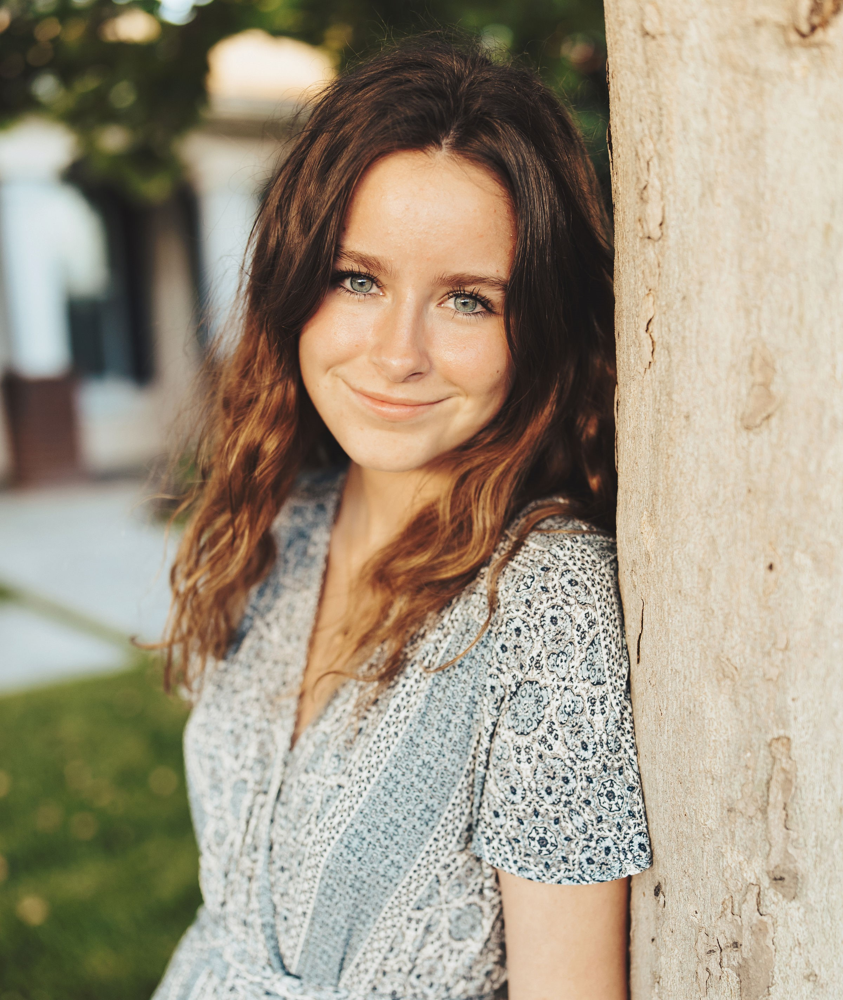

Natalie Hamel | WDD 130
Hello! My name is Natalie Hamel, I am 21 years old, and I am from California. I live here with my husband and our sweet siberian husky/australian shepherd dog. Both my husband and I grew up here in the Central Valley. We actually grew up just down the street from one another. We are lucky to still have both of our families so close to us! My major is in software development. Originally I was doing graphic design but recently I changed my plans after taking an HTML and CSS class. I love going to the beach, up to my family cabin in the Sierra Nevadas, and on road trips. Our most recent road trip was to Big Sur California. It is gorgeous there and I highly recommend. We camped for about a week, and it was so relaxing and fun. I also enjoy reading, playing piano, taking care of my house plants, hiking, camping, running, playing tennis, cooking and hanging out with my family on the couch with a good movie on. I love eating tacos, chips and salsa, burgers, fries, orange chicken, and good snacks. That is about it, I am a pretty picky eater. Finally, if you want to make my day, just get me some Taco Bell!